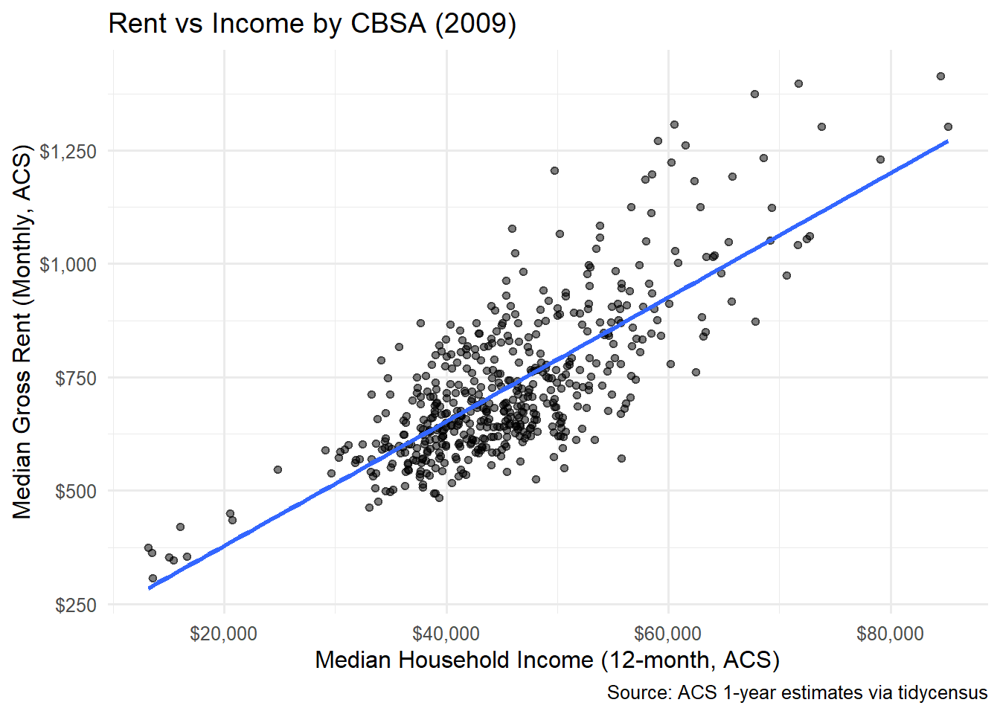
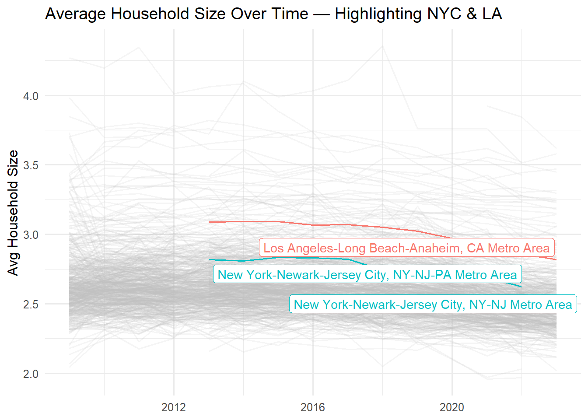
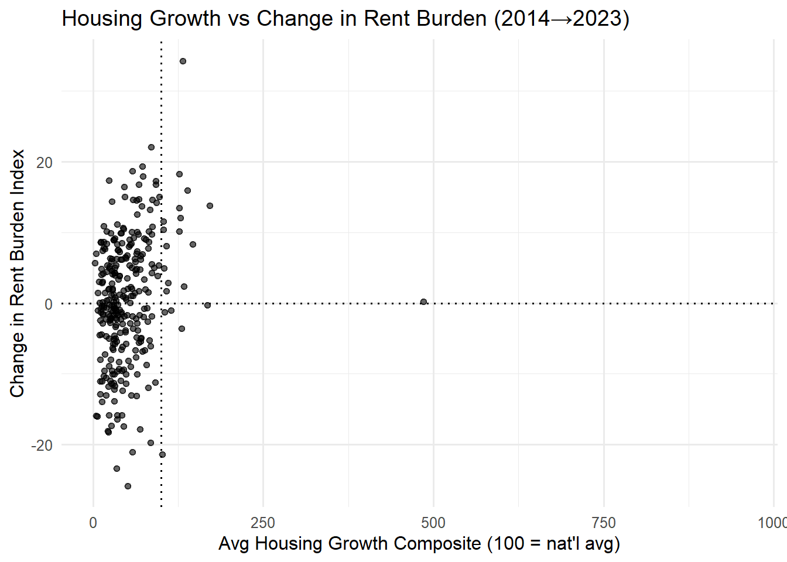

[1] "data/mp02/B01003_001_cbsa_2009_2023.csv"
[2] "data/mp02/B11001_001_cbsa_2009_2023.csv"
[3] "data/mp02/B19013_001_cbsa_2009_2023.csv"
[4] "data/mp02/B25064_001_cbsa_2009_2023.csv"
[5] "data/mp02/housing_units_2009_2023.csv" INCOME RENT POPULATION HOUSEHOLDS PERMITS
[1,] 7279 7279 7279 7279 5658
[2,] 4 4 4 4 3# A tibble: 5 × 4
GEOID NAME household_income year
<dbl> <chr> <dbl> <dbl>
1 10140 Aberdeen, WA Micro Area 36345 2009
2 10180 Abilene, TX Metro Area 42931 2009
3 10300 Adrian, MI Micro Area 45640 2009
4 10380 Aguadilla-Isabela-San Sebasti?n, PR Metro Area 13470 2009
5 10420 Akron, OH Metro Area 47482 2009# A tibble: 5 × 4
GEOID NAME monthly_rent year
<dbl> <chr> <dbl> <dbl>
1 10140 Aberdeen, WA Micro Area 650 2009
2 10180 Abilene, TX Metro Area 712 2009
3 10300 Adrian, MI Micro Area 645 2009
4 10380 Aguadilla-Isabela-San Sebasti?n, PR Metro Area 363 2009
5 10420 Akron, OH Metro Area 723 2009# A tibble: 5 × 4
GEOID NAME population year
<dbl> <chr> <dbl> <dbl>
1 10140 Aberdeen, WA Micro Area 71797 2009
2 10180 Abilene, TX Metro Area 160266 2009
3 10300 Adrian, MI Micro Area 99837 2009
4 10380 Aguadilla-Isabela-San Sebasti?n, PR Metro Area 342495 2009
5 10420 Akron, OH Metro Area 699935 2009# A tibble: 5 × 4
GEOID NAME households year
<dbl> <chr> <dbl> <dbl>
1 10140 Aberdeen, WA Micro Area 27759 2009
2 10180 Abilene, TX Metro Area 58052 2009
3 10300 Adrian, MI Micro Area 36835 2009
4 10380 Aguadilla-Isabela-San Sebasti?n, PR Metro Area 91805 2009
5 10420 Akron, OH Metro Area 281769 2009# A tibble: 10 × 3
CBSA new_housing_units_permitted year
<dbl> <dbl> <dbl>
1 10180 214 2009
2 10420 741 2009
3 10500 213 2009
4 10580 1380 2009
5 10740 1692 2009
6 10780 396 2009
7 10900 1648 2009
8 11020 125 2009
9 11100 642 2009
10 11180 122 2009$INCOME_years
[1] 2009 2010 2011 2012 2013 2014 2015 2016 2017 2018 2019 2021 2022 2023
$RENT_years
[1] 2009 2010 2011 2012 2013 2014 2015 2016 2017 2018 2019 2021 2022 2023
$POP_years
[1] 2009 2010 2011 2012 2013 2014 2015 2016 2017 2018 2019 2021 2022 2023
$HHLDS_years
[1] 2009 2010 2011 2012 2013 2014 2015 2016 2017 2018 2019 2021 2022 2023
$PERMITS_years
[1] 2009 2010 2011 2012 2013 2014 2015 2016 2017 2018 2019 2020 2021 2022 2023# A tibble: 1 × 4
n_rows min_year max_year total_units
<int> <dbl> <dbl> <dbl>
1 5658 2009 2023 15974391# A tibble: 5 × 2
CBSA total
<dbl> <dbl>
1 26420 482075
2 19100 460826
3 35620 446020
4 12060 254377
5 47900 232483# A tibble: 5 × 3
CBSA total NAME
<dbl> <dbl> <chr>
1 26420 482075 Houston-The Woodlands-Sugar Land, TX Metro Area
2 19100 460826 Dallas-Fort Worth-Arlington, TX Metro Area
3 35620 446020 New York-Newark-Jersey City, NY-NJ-PA Metro Area
4 12060 254377 Atlanta-Sandy Springs-Alpharetta, GA Metro Area
5 47900 232483 Washington-Arlington-Alexandria, DC-VA-MD-WV Metro Area



# A tibble: 2 × 12
CBSA NAME rb_start rb_end pop_start pop_end pop_delta HG_avg
<dbl> <chr> <dbl> <dbl> <dbl> <dbl> <dbl> <dbl>
1 26140 Homosassa Springs, F… 123. 122. 139377 166696 27319 115.
2 15500 Burlington, NC Metro… 112. 90.5 155792 179165 23373 102.
# ℹ 4 more variables: had_high_rb_early <lgl>, rb_decreased <lgl>,
# pop_grew <lgl>, above_avg_HG <lgl># A tibble: 2 × 12
CBSA NAME rb_start rb_end pop_start pop_end pop_delta HG_avg
<dbl> <chr> <dbl> <dbl> <dbl> <dbl> <dbl> <dbl>
1 26140 Homosassa Springs, F… 123. 122. 139377 166696 27319 115.
2 15500 Burlington, NC Metro… 112. 90.5 155792 179165 23373 102.
# ℹ 4 more variables: had_high_rb_early <lgl>, rb_decreased <lgl>,
# pop_grew <lgl>, above_avg_HG <lgl># A tibble: 10 × 12
CBSA NAME rb_start rb_end pop_start pop_end pop_delta HG_avg
<dbl> <chr> <dbl> <dbl> <dbl> <dbl> <dbl> <dbl>
1 33100 Miami-Fort Lauderda… 136. 144. 5929819 6183199 253380 35.8
2 38940 Port St. Lucie, FL … 127. 141. 444420 536901 92481 93.2
3 45300 Tampa-St. Petersbur… 117. 137. 2915582 3342963 427381 72.1
4 36100 Ocala, FL Metro Area 117. 134. 339167 409959 70792 92.6
5 41500 Salinas, CA Metro A… 122. 131. 431344 430723 -621 20.2
6 17020 Chico, CA Metro Area 120. 130. 224241 207172 -17069 65.2
7 19660 Deltona-Daytona Bea… 128. 130. 609939 721796 111857 76.9
8 32900 Merced, CA Metro Ar… 112. 129. 266353 291920 25567 23.8
9 23540 Gainesville, FL Met… 111. 128. 272994 350203 77209 67.6
10 22380 Flagstaff, AZ Metro… 112. 127. 137682 144472 6790 58.5
# ℹ 4 more variables: had_high_rb_early <lgl>, rb_decreased <lgl>,
# pop_grew <lgl>, above_avg_HG <lgl>